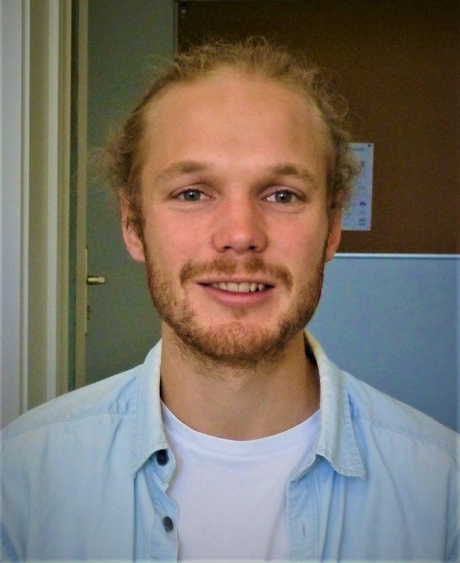

<section class="page-section clearfix">
  <div class="container">
    <div class="intro">
      
      <div class="intro-text left-0 bg-faded p-5 rounded">
        <h2 class="section-heading mb-4">
          <span class="section-heading-upper">
            Tim Williams <br>
          </span>
          <span class="section-subheading-upper">
            PhD Candidate <br>
            Industrial & Operations Engineering <br>
            University of Michigan
          </span>
        </h2>
        <p class="mb-3">
          I model risk and resilience in smallholder agricultural systems.
          <br>
          <br>
          My underlying motivation is to encourage agricultural systems
          to develop and transform in a way that promotes both the betterment of society and the prosperity of the environment.
          <br>
          <br>
          To achieve this, I use both agent-based modeling to examine how systems may behave in the future or under intervention
          and empirical analysis and data mining to better understand observed historical relationships.
          I am broadly interested in the intersection of these two forms of analysis.
        </p>
        <!-- <h2 class="section-heading mb-4">
          <span class="section-heading-upper">
            Github contributions
          </span>
        </h2>
        <p>
          
        </p> -->
      </div>
    </div>
  </div>
</section>
